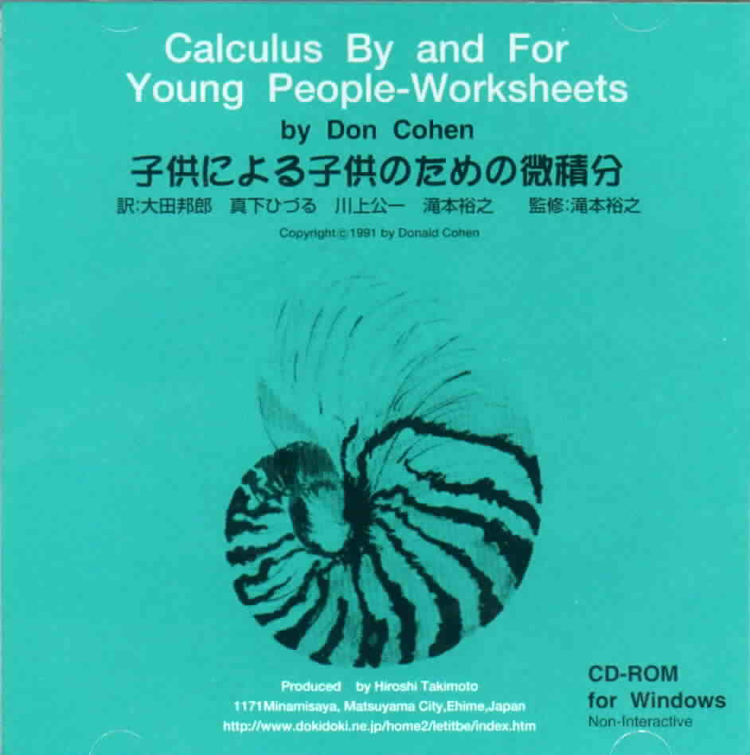

The CD-ROM with Don's book "Calculus By and For
Young People- Worksheets", in English AND Japanese.
Thank you Hiroshi for all your efforts on my
behalf!!!...Don

Mr. Hiroshi Takimoto,
a JUKU owner and math teacher, from Matsuyama, Japan, is completely responsible
for the CD-ROM with Don's worksheet book in Japanese and English. Mr. Takimoto
had Don's worksheet book translated and had each page put in pdf files so that
it can be read on a PC computer by Adobe Acrobat Reader, and did all the other
work and spent his own money!, to make this CD come about. Mr.
Takimoto sells it on his website .
Mr. Takimoto also found Kodansha Ltd., who published the Japanese
translation, by Noriko Arai, of Don's book "Calculus By and For Young
People (ages 7, yes 7 and up)" on August 20, 1998. On April 20, 2001
Kodansha also published the Japanese version of Don's third book "Changing Shapes With
Matrices", co-authored by Ms. Arai.
 To
order Don's materials
To
order Don's materials
Mathman home